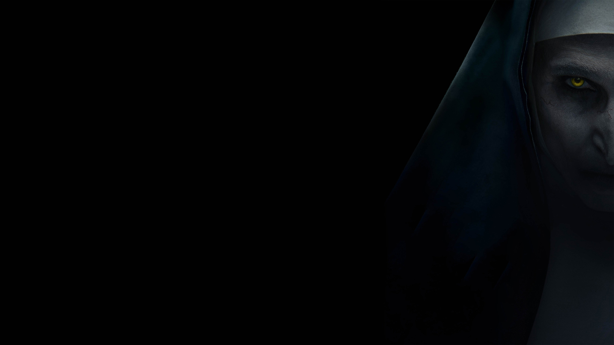

La Monja90% de coincidencia 1 h 55 minLa Monja es una próxima película estadounidense de terror sobrenatural dirigida por Corin Hardy. El guion fue escrito por Gary Dauberman y James Wan. Es una película derivada de The Conjuring 2 y la quinta entrega de The Conjuring.REPRODUCIRTRAILERProtagonistas: Bonnie Aarons, Taissa Farmiga, Charlote Hope. Genero: Terror.
 REPRODUCIR
TRAILER
REPRODUCIR
TRAILER